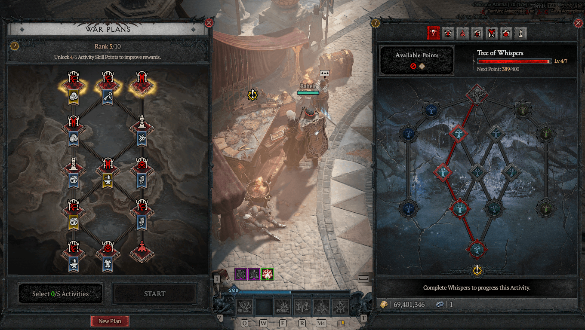
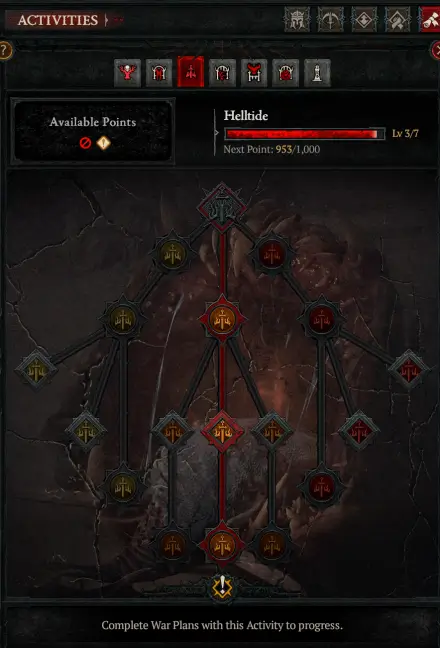
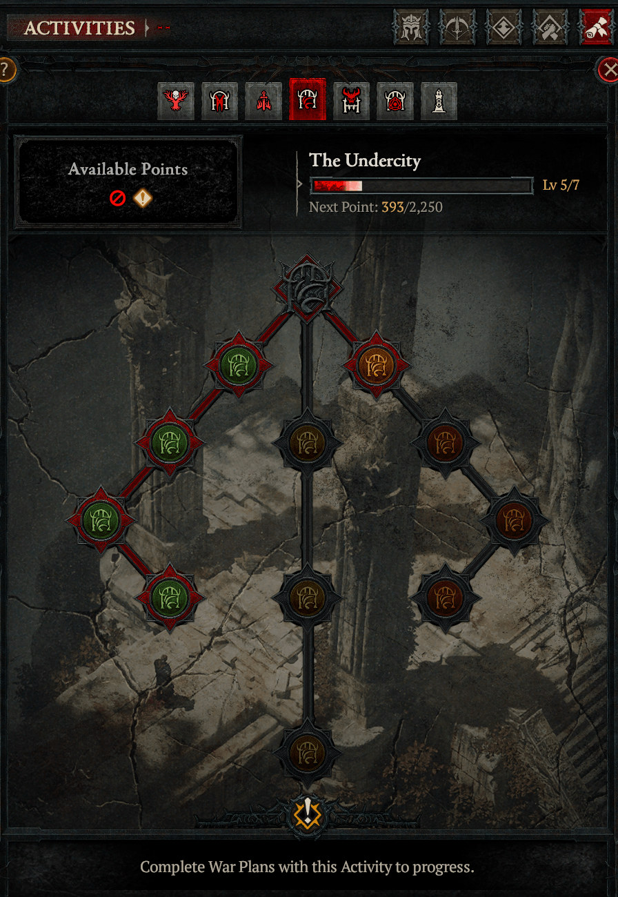
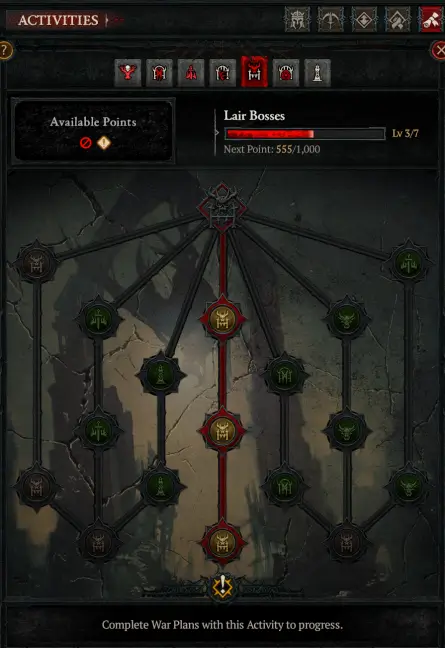
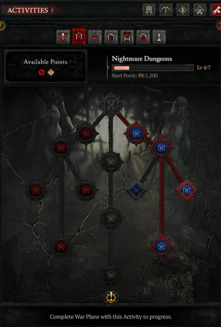
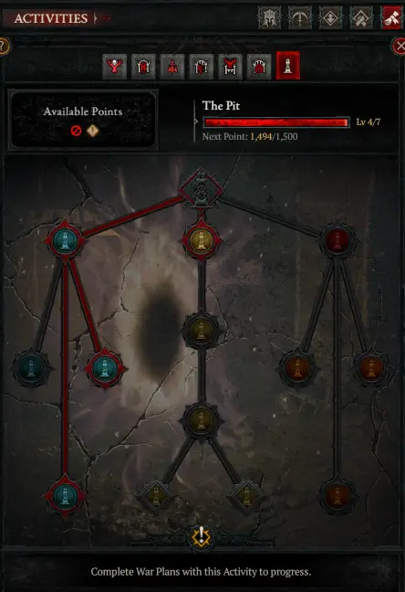
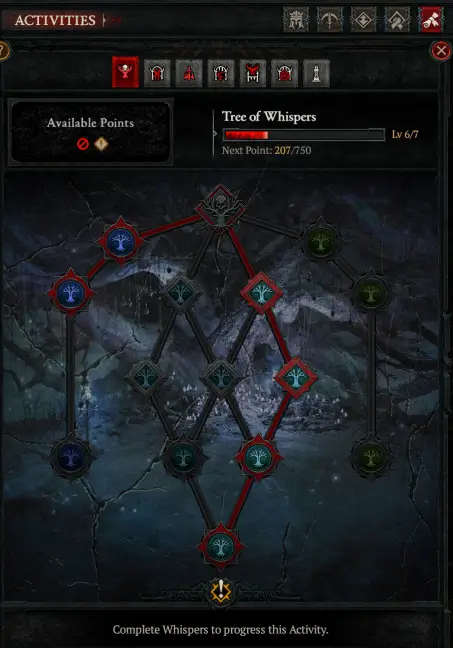
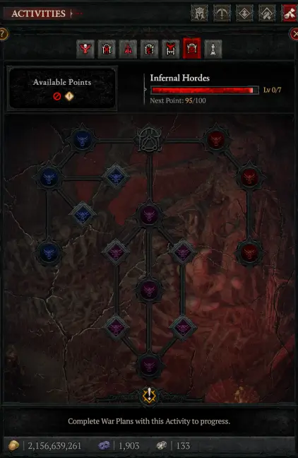

征战计划 Complete Guide
S13赛季新增终局系统 · 7大活动路线规划 · 技能树选择与奖励优化 · 活动排名与最佳路线
征战计划基础机制
征战计划是S13新增的终局系统，为玩家提供多样化方式定制终局体验。系统包含可选的修改（活动路线）和可定制的奖励（技能树）。

系统组成
征战计划由两部分组成：
- 左侧 — 活动路线：选择计划路径，包含不同活动，在计划结束时提供奖励
- 右侧 — 技能树：7种活动对应各自技能树，修改奖励类型、增加额外奖励或挑战
如何规划路线
启动一个战争计划后，获得一系列分支活动和奖励选择。每个活动链接到另一系列活动。一旦锁定无法更改，因此选择路线至关重要。
一般策略：选择能在最短时间内提供最佳基础奖励和最佳计划奖励的活动。
奖励类型（按优先级排序）
每个奖励分为6个数量等级（从少量到神话级）。最佳策略：选择最高等级的最佳奖励路线，同时挑选能最快完成的活动。
地狱潮汐 S级

排名：S级 — 征战计划中最值得选择的活动。设置得当的地狱潮汐同时提供经验值、巢穴钥匙和遗忘灵魂，这是获取三种资源最好的方式，是S13赛季最重要的资源。
技能树路线分析
库拉斯特下城 A级

排名：A级 — 跑得非常快，非常适合征战计划。基础奖励非常可定制，贡品系统让奖励选择极具灵活性。所有3条技能树路径都值得选择。
巢穴首领 A级

排名：A级 — 活动完成时间最快，通常只需几秒。中间路径提供一系列首领，完成时奖励大量宝箱。
梦魇地城 A级

排名：A级 — 快速简单的活动，对所有账号都不是问题。拥有所有活动中最高的潜力，得益于技能树右侧路线。
深渊 B级

排名：B级 — 与以往赛季相比，深渊被大幅削弱。当前赛季主要作用就是获取符文经验值。如果选择较低难度快速跑图，可以较快完成，但总体价值有限。
低语之树 B级

排名：B级 — 征战计划中无法主动选择，而是被动获得的系统。低语宝箱可以存放腐化根，种植后吸引敌人，击杀获取战利品和额外奖励宝箱。
狱潮 C级

排名：C级 — 征战计划中选择最差的活动。完成时间过长且缺乏相关奖励。完成一个完整征战计划所需的时间足以完成10波狱潮。除非专门刷巴图克的稀有掉落，否则应尽量避免。
路线总结与优先级
S13征战计划活动优先级快速参考：
- S级 — 地狱潮汐：必选活动，经验+钥匙+遗忘灵魂三位一体
- A级：库拉斯特下城（快速+定制奖励）、巢穴首领（秒完成）、梦魇地城（右侧宝藏哥布林拼RP）
- B级：深渊（符文经验）、低语之树（被动获取，不用主动选）
- C级 — 狱潮：除非刷巴图克，否则不选
最佳策略：优先选择地狱潮汐作为核心活动，搭配库拉斯特下城或巢穴首领。技能树方面，地狱潮汐走中间获得钥匙，梦魇地城走右路拼神话，库拉斯特左/中路线根据需求选择。
一旦锁定征战计划就无法更改，每次选择前请结合当前Build需求和目标活动进行规划。